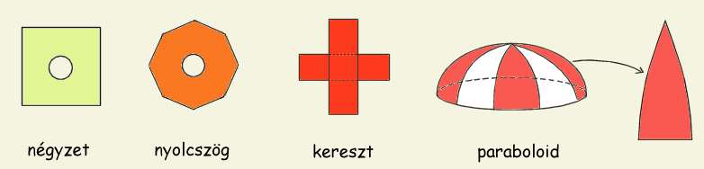
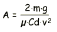
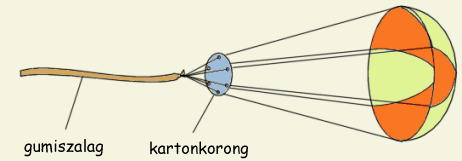
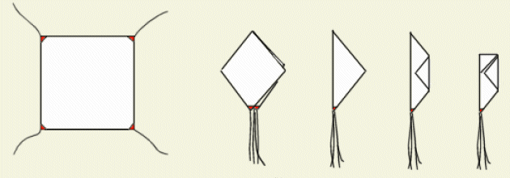
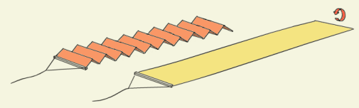

Két igazán nagy kihívás van az amatőr rakétázásban és mindkettő valamilyen módon a gravitáció leküzdésével kapcsolatos. Az egyik nagy feladat egy megfelelően erős motor építése, amely képes felvinni a rakétát a magasba. A második nagy kihívást egy megbízható fékezőrendszer kidolgozása jelenti, amely épségben visszahozza rakétánkat a földre. Aki próbált már valaha is házilag rakétát építeni, tudja, hogy a rakétát talán problémásabb sérülések nélkül visszahozni a magasból, mint oda felküldeni. A következőkben néhány olyan megoldás leírása található, amelyek garantálják a rakéta biztonságos földetérését.
Az ejtőernyő használata kétségkívül a rakéták fékezésének legelterjedtebb módja, a megoldás egyszerűsége és hatékonysága miatt. Viszonylag kis méretű (és tömegű) ejtőernyő képes a rakétát "biztonságos" sebességre lassítani, amelynél a becsapódás már nem okoz károsodást benne. Az ejtőernyő használatának más előnye is van: egy élénk színre festett ejtőernyő igen hasznosnak bizonyulhat ha rakétánkat szem elől tévesztettük, és ekkor még nem is említettük a kidobótöltet könnyen észrevehető füstfelhőjét.
Az ejtőernyőnek gyakorlatilag bármilyen sokszög alakja lehet a négyzettel kezdődően, lehet hatszög, nyolcszög, tizenhatszög...de akár kör is. Túl sokszögűre gyártani fölösleges, mert csak nő a szükséges kötelek száma, az ernyő bonyolultsága és tömege, hatékonysága ellenben nem változik számottevően. Ajánlatos az ernyő kupolájának közepébe egy lyukat vágni, ezáltal stabilabb süllyedés érhető el (kevésbé himbálózik, egyenesebb vonalban süllyed és kevésbé hajlamos a sodródásra). A lyuk felülete kb. az ernyő teljes felületének egytizede kell legyen. Az 1. Ábra néhány egyszerűen elkészíthető kedvelt kupolatípust ábrázol.
|  | 1. Ábra: A legnépszerűbb kupolatípusok |
Legegyszerűbb a négyzet alakú ejtőernyőt elkészíteni, de ez nem a leghatékonyabb megoldás. Ajánlatosabb a kupolát hat- vagy nyolcszögűre, vagy éppen kör alakúra gyártani. Kedvelt típus a kereszternyő is, amely valamivel stabilabb, kevésbé himbálózó süllyedést biztosít és szintén könnyen elkészíthető. A kereszternyőbe nem kell lyukat vágni, meglehetősen stabil anélkül is. Paraboloid (vagy szemiellipszoid) alakú ernyőt készíteni valamivel munkásabb feladat, mivel csak az ábrán látható részek összevarrásával tudjuk kialakítani a megfelelő formát. Kis méreteknél gondot jelenthet a lyuk készítése is a paraboloid ernyő közepébe, mert éppen itt kell jól megerősíteni a varrást.
Az ejtőernyőt legjobb lenne síklóernyő-anyagból készíteni, de ennek hiányában bármilyen kis fajsúlyú textília megfelel. Sátoranyag, esőernyő vagy selyeming, de éppen egy neylonzacskó is felhasználható. Láttam már háztartási fóliából (folpack) készített ejtőernyőt is. Jó ha a felhasznált textília sűrű szövésű, hogy kevés levegőt engedjen át, ez de nem meghatározó tényező. A tapasztalat azt mutatja, hogy az ejtőernyő hatásfoka meglehetősen kevéssé függ a felhasznált anyag légáteresztő képességétől, persze csak egy bizonyos határig. Legegyszerűbb, ha a rendelkezésre álló textíliák közül kiválasztjuk a legkisebb fajsúlyút. Figyelembe vehetjük azt is, hogy a műanayag kupolák a kidobótöltet hőjétől helyileg megolvadhatnak. Ezért pl. egy nagy rakét többször is felhasználható ejtőernyőjét mindenképp érdemes valamilyen "rendesebb" textíliából készíteni.
Mivel a rakétázásban az indulási tömeg rendszerint meghatározó tényező, általában az a legkisebb méretű ernyő készítése a cél, amely még kellőképpen le tudja lassítani a rakétát. Ehhez elsősorban azt lenne jó tudni, hogy melyik az a sebesség, amelyet még elvisel a rakétánk földetéréskor (természetesen anélkül, hogy megsérülne), mert ez alapján már ki lehet számolni a szükséges kupolaméretet. A sebesség becsléséhez segítséget nyújthat a következő táblázat:
sebesség
(m/s)süllyedés típusa megjegyzés 2 - 5 síkló ereszkedés Az ernyő valósággal elcsúszik a levegőn, könnyen sodródik. Az ernyős kategóriában
induló rakétákra jellemző, ahol a minél későbbi földetérés a cél.5 - 7 himbálózó ereszkedés Ez a rakéták nagy részére jellemző "normális" süllyedési sebesség, amely még nem
veszélyesen, de már eléggé gyors.7 - 10 zuhanó ereszkedés Meglehetősen gyors, szinte egyenes vonalú süllyedés, streameres rakétákra jellemző.
Ilyen sebességű földetérésnél már károsodhatnak a sérülékeny részek, pl. a szárnyak.
Ha már kiválasztottuk a sebességet, az adott rakétához szükséges ejtőernyőméretet legkönnyebb rakétás szimulátor programokkal meghatározni, mint RockSim, RR-szimul vagy mások. Ha nem áll rendenlkezésünkre ezen programok valamelyike, akkor a következő képlettel számítható ki a szükséges ernyőfelület:
|  |
A Cd értéke az ernyő alakjától és a süllyedési sebességtől függ. A sebesség növekedésével csökken a Cd, mivel a kupola anyagának pórusai kitágulnak és egyre több levegőt étengednek (ez természetesen nem érvényes a neylonfóliából észült ernyőkre). A Cd értékét nagymértékben befolyásolya az ereszkedési mód is, sikló ereszkedés esetén jóval nagyobb a Cd mint zuhanó ereszkedésnél. Paraboloid ernyők Cd-je nagyobb mint az egyszerű (sokszög vagy kör) ernyőké. A legkisebb Cd-je a kereszt- valamint a négyszögernyőknek van.
|  |
| 2. Ábra: A kötelek összekavarodását megakadályozó korong |
A kötelek hossza: általában az ernyő átmérőjénél 1.5 - 2.5 - szer hosszabb köteleket szokás használni. A túlságosan rövid (egy ernyőátmérőnél kisebb) kötelek nem engedik teljes méretére kifeszülni az ejtőernyőt és kisebb lesz a Cd-je mint amekkora lehetne. A kötelek összebogzódásának elkerülése végett az alábbi ábrán látható megoldás alkalmazható: kartonpapírból egy korongot vágunk, amelyet a szélein meglyukasztunk és a lyukakon áthúzzuk az ernyő köteleit. A köteleket a korong után összebogozzuk és gumiszalaggal a rakéta törzséhez illetve az orrkúphoz erősítjük.
Az ejtőernyőt midig úgy kell csomagolni, hogy a lehető legkönnyebben kinyíljon, miután kidobódik a rakétából. Az alábbi ábrán látható, hogyan ajánlatos egy négyszögernyőt összehajtogatni. Ehhez hasonló módon kell eljárni bármilyen típusú ejtőernyőröl is legyen szó. Az összehajtogatott ernyőre nem tanácsos túlságosan sok kötelet csavarni, mert megakadályozhatja a kinyílást. Legjobb 2 - 3 alkalommal körbetekerni, majd a többi kötelet mellécsomagolni. Az összehajtogatott ejtőernyőt ajánlatos egy rend papírba is csomagolni, ami a kidobótöltet lángjától és forró gázaitól hivatott megóvni a kupolát. Különösen a műanyagfóiából készült, de más ejtőernyők esetén is tanácsos már összehajtogatáskor hintőport szórni a rétegek közé. Ez az összetapadást akadályozza meg és a könnyebb kinyílást segíti elő. A már összecsomagolt/felcsavart ejtőernyőt ismét "be kell púderezni", hogy könnyen kicsússzon a rakétából.
|  | 3. Ábra: Az ejtőernyő hajtogatásának lépései |
A streamer egy papírból, műanyagból vagy valamilyen szövetből készült szalag, amelyet az ejtőernyő helyett használhatunk. A szalag a levegőben a rakéta után lobogva lassítja a süllyedést. Használata kevésbé elterjedt mint az ejtőernyőé, mivel a streamer gyengébben fékez, nagyobb lesz tehát a becsapódási sebesség és a rakéta sérülésének veszélye. A streamer előnye, hogy egyszerűbb elkészíteni, mint az ejtőernyőt és talán könnyebben észrevehető a magasban. A gyenge fékezésnek jó oldala is van, éspedig az igen stabil (zuhanó típusú) süllyedés, mondhatni a rakéta egyenesen lefele ereszkedik és nagyon kevéssé sodródik a széllel. A streamer sok esetben az ejtőernyővel kombinálva is használatos, az igen nagy magasságot elérő rakéták esetén. Ilyenkor a streamer oldódik ki előbb és a fékezőernyő szerepét tölti be. Önmagában használva a streamer leginkább kis és könnyű rakéták visszahozására alkalmas.
|  |
| 4. Ábra: A kötelek összekavarodását megakadályozó korong |
A streamernek két típusa van: az egyik papírból készül és harmonikaszerűen összehajtogatva csomagoljuk össze. A másik változat műanyag fóliából vagy valamilyen textíliából készül és felcsavarva kerül a rakétába (a gyorsabb kioldás érdekében a streamert előbb kettőbe vagy háromba tűrjük és úgy csavarjuk fel). Mindkét típusú streamer esetében a szalag egyik végére kis fa- vagy műanyagpálcát erősítünk, erre kötjük a kötelet, a 4. Ábrán látható módon. A streamer szükséges méretét nem igazán lehet kiszámolni, könnyebb szemre "belőni", más streameres rakétákból kiindulva (lásd a Tervrajzok oldalon). A szalag szélesség/hosszúság aránya 1/5 - 1/10 között szokott lenni. Túlságosan hosszúra nem szokás csinálni, mert felcsavarva nehezen fér bele a rakéta törzsébe. Egy hosszú streamer helyett általában előnyösebb (csomagolás szempontjából) két rövidet használni, tandemben.